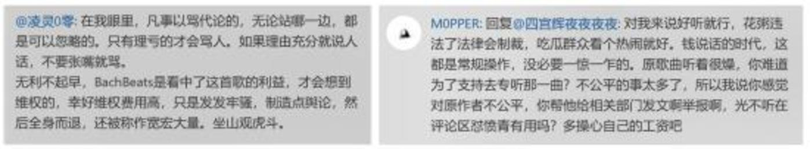

| 广告位 |
您现在的位置是：电商 >
“抄袭”花粥与“做号”露露，揭开的是内容创
2019-11-20 14:32电商 人已围观
简介 凭借《盗将行》那有点儿不太通的歌词以及相对好听的旋律在主流舆论圈火了一阵花粥（当然她在小众圈已经挺火）...
凭借《盗将行》那有点儿不太通的歌词以及相对好听的旋律在主流舆论圈火了一阵花粥（当然她在小众圈已经挺火），最近摊上事了。
3月初，B站捅出独立音乐人“花粥”（原名未知，网络猜测为“郭莉达”）知名歌曲《出山》涉嫌“抄袭”德国说唱歌手Kram D的《Anders Als Ihr》，随后花粥发表声明称工作室搭档王胜男已购买编曲使用权，不过网友并不买账，他们发现该编曲只是被“租用”，且花粥的商用动作已经越权。这不是花粥第一次被指“抄袭”了，她于2012年发布的单曲《妈妈要我出嫁》歌词被扒出全盘照搬了同名的俄语民歌。
3月9日，网络盛传《出山》原曲作者表态：因无法承担昂贵的诉讼费用和时间成本暂时停止诉讼。这激起网友的激愤之情，他们在网易云音乐《出山》歌曲的评论区纷纷刷屏要求下架，这“推动”《出山》超越名曲《盗将行》成为花粥第一歌。
过了没几天，“河南女孩”露露接棒花粥成为舆论热点，她给自媒体三表上了一节7万元的课，并让三表先生收到Pony先生的200块打赏，露露女士就这样成为内容创业圈的网红。
花粥与露露前赴后继，在时间上固然是巧合，但它们揭开的是内容创业的同一个伤疤。
音乐内容创业者：骨干的现实，和难以被监管的自由
独立音乐人也是内容创业者，只不过他们很早就存在于互联网上，被不温不火的在线音乐推动，不像如今的自媒体平台那么惹眼。
但这不意味着这个领域的参与者就少。
根据某音乐平台自己的数字，单单入驻其平台的独立音乐人已经达到7万，再加上各大在线音乐平台都在拉拢独立音乐人，粗略估计国内独立音乐人超过10万是没问题的，这是一个十分庞大的内容创作者群体，也是从上古互联网时代到如今一直存续的所谓内容创业赛道。
与此同时，在正版意识萌发以及数字音乐平台的扶持下，独立音乐人及其作品被曝光的可能性大大增加，在某平台上，独立音乐人陈雪凝的《我唯一青春里的路人》播放量达2.1亿，她还不一定是最高的。看起来，成功的独立音乐人确实是这场内容创业大道上的受益者。
不过，更真实的现实是，与自媒体平台一样，有发财的就有大多数不挣钱的。
根据网易云音乐自己的报告，有68% 的音乐人在音乐上获得的平均月收入在1000元以下，而月音乐收入在1 万以上的音乐人占比才不到5%。与内容创业一样，这真的是一个需要梦想支撑的行当，靠《成都》火了的赵雷，靠《董小姐》挤进主流音乐圈的宋冬野毕竟是少数。
音乐创作是极费时间的事，音乐制作需要大量软硬件资源支持，而粉丝运营又十分需要精力，独立音乐人如此的收入水准显然难以保障作品的质量。而偶有还算过得去的产品，例如花粥的《盗将行》（这歌是清白的），纵有被公认的优秀旋律，离经叛道的歌词还要惹来学究派的一顿严肃批判，除了粉丝小众圈，独立音乐人在主流圈层的认可度并不乐观，如同曾经的郭德纲在主流相声圈一样。
不过，独立音乐人处在音乐内容领域，也不是全然没有“沾光”，在被现实束缚的梦想面前，他们至少有难以被监管的自由。多数人不会如宋冬野般放浪不羁去吸毒，但打点小抄还是可以的。
1年前，现在当红的独立音乐人徐秉龙《没有歌的名字》被网友质疑抄袭日本歌曲岸部真明的《少年の梦》，网友“武言圣_WY”找他对质后被拉黑（见“三分半音乐”《00后独立音乐人就可以抄袭吗？》）；
另一个独立音乐人李袁杰则技术更强，其《离人愁》被网友发现糅合了多首歌曲，包括周杰伦的《红尘客栈》、《烟花易冷》等，被看戏网友讽刺为“串烧歌曲”；
还有更多以“致敬”或“灵感来源”为名的不露痕迹的抄袭，在独立音乐人市场上，少了主流音乐圈千万双眼睛盯着，创作变成了一件十分“自由”的事。
沦为“公地悲剧”的内容平台，也在“成就“优质内容创作者的“反比悖论”
随着在线音乐平台崛起及相互竞争的加剧，独立音乐人越来越面对与图文自媒体一样的内容创业环境。花粥的“抄袭”与露露做号，有着共同的背景。
首先，是类似的作者“扶持计划”，这是第一步——流量可以换钱。
各自媒体平台下血本投入的各类自媒体扶持“计划”自不必多说，它们是露露的巨额补贴来源，而这些年来，在线音乐平台也十分舍得。
曾经的独立音乐大佬虾米音乐2014年7月起推出“寻光计划”；
后起的独立音乐资深玩家网易云音乐2016年11月推出“石头计划”；
老牌在线音乐品牌太合音乐（即原来的千千静听）2017年4月推出伴星计划；
在线音乐榜首的QQ音乐2018年4月推出“原力计划”（同属腾讯音乐，参与者还包括酷狗和酷我音乐）；
甚至社区型音乐平台豆瓣也在2015年推出“金羊毛”计划……值得注意的是，不同于自媒体平台偶有计划名字的更改，这些计划是在不断持续、换季的，寻光计划、石头计划等目前都已经到了第二季度。
总得看来，这些计划与流量都有着不能割舍的关系，一方面，计划中往往含有在线音乐平台的播放量广告分成计划（类似自媒体广告），另一方面，更高的流量就意味着更容易被计划“挑中”获取后续发唱片、开线下演唱会的便利，这与自媒平台的高额补贴相对应。
然后，是类似的内容推荐机制，这是第二步——知道什么东西能带来流量。
各自媒体平台都研发出了一大堆所谓AI+大数据的精准推荐机制，在精准锁定流量与用户时长上都颇有建树，露露正是借此打造迪丽热巴机场摔粉丝手机之类的爆款文。
这在音乐平台上是类似的，歌单、每日推荐模式下，不同的独立音乐产出有了匹配用户的可能，独立音乐人可以借力找到种子用户。根据“读娱君”的报道，目前网易云音乐个性化推荐功能使用率达75%，曲库使用率达80%，而QQ音乐、虾米音乐、豆瓣等也纷纷跟进，“音乐信息流”事实上已经形成。
最后，是类似的抄袭环境，这是第三步——能顺利地把内容造出来。
诚如各界媒体所言，露露的抄袭没什么套路，就是找热点搬运，东拼西凑找出用户喜欢的东西，再或与某些内幕人士交易，获得同样话题下更多的权重。抄袭之所以盛行，根源还在于图文自媒体没什么版权的屏障，更缺乏视觉中国之类的维权商业模式，只要不去刻意黑别人，大家都可以其乐融融。
也正是这样，辛辛苦苦给钱给流量的平台成了“公地悲剧”中的公地，做号集团，“营销号”肆意地把这些平台作为自己薅羊毛的公地，他们不生产原创内容，而是通过剪切、拼凑全网素材组稿成伪原创，以此躲避平台的原创检测系统，从而获得最大化的流量和平台分成。
新榜曾暗访洗稿产业链，说“有30人集团月入700万”，而且生产内容后，要么“自己养号，把流量最大化，获取平台分成”；要么“一次性出售给别人，而买家的用途，要么是继续养号挣补贴，要么是接黑五类广告，或者导流到赌博、色情网站等。”
给钱的平台就被这些人肆意践踏，直至再无油水可捞，甚至被关键部门重罚。
独立音乐其实也类似，甚至更甚。
目前为止，全球被各版权局官方统计的总共超过60亿首歌，且每秒约增加2首。这意味着，当你抄袭北欧小众歌曲、东南亚民族歌曲、日本北海道乡愁歌曲时，能够被用户知道的概率极低，除非这首歌一不小心被粉丝在哪里听到了，花粥租来的《Anders Als Ihr》即便在Youtube上有2000万的播放量，但在国内也几乎没什么人知道。
更进一步，即便被人发现，在权利判断上，图文自媒体尚可“查重”，而音乐作品由音符组成，目前法律规定是“被诉侵权人作品与权利人作品有8个小节雷同或者整首音乐伴奏中主和弦部分基本相同、属和弦有60%的相似，则构成实质性相似，即构成侵权”，然而，在司法实践中，这种感知其实是带有主观色彩的，谁来判断（法律专业术语：判断主体的选择）对是否构成侵权有决定性作用，这造成了很大的不确定性，海外旮旯里的歌曲所有者很难远渡重洋来管这个事。
有意思的是，当我们去审视那些通过抄袭轻易完成的作品时，它们大多数盯上的是本就有十分美好旋律或歌词，或能满足某些用户喜好，是60亿首曲子中较为优秀或独特的那一类，例如《Anders Als Ihr》的开场伴奏就成为《出山》最吸引人、最精华的部分（可到平台试听）。这也成为独立音乐人吸引流量、符合算法要求最佳捷径，与做号党筛选内容有异曲同工之妙。
当然，这对内容创作者而言，就呈现出一个尴尬的“反比悖论”现实：
越是时间价值投入越低的，经济价值就越高；你想要获得更多的经济价值，必须想尽办法把作品的创作时间缩短，投入越多，收益越少。
比三表“零收益”好一点的知名自媒体人Keso，三年平台收益1428.08元，在描述这件事时，他说：
“三表说，他要接过“露露”的笔，继续“露露”未竟的事业，在他的企鹅号上继续玩“露露”玩了两个月的娱乐套路。我觉得他有点过于低估了做号的专业壁垒，过于低估了一天5篇抓眼球的小破文的制造难度。请给专业一点儿尊重。”
这并不只是调侃，老是自己搞原创的内容创业者，去搬运抄袭没营养的流量爆文未必能行，他们不懂得只有匹配更低创作时间的作品才能有更高经济价值的道理，或许，至少在目前这样的环境中，这才是内容创业的“最便捷的道路”。
粉丝对独立音乐人的辩护，恰恰让内容创业者成了牺牲品
如果非要说在内容创业的形式上与图文自媒体有什么独特之处，独立音乐人自带的粉丝群体无疑是最大的优势。
在自媒体平台模式下，用户只属于平台不属于作者，这加剧了优质内容创作者相对做号党的劣势，做深度内容的前者更依赖粉丝吃饭。而独立音乐人，无论混得好坏，用户都是属于自己而不属于平台。
《出山》事件爆发后，众多粉丝“挺身而出”为花粥辩护，或者反怼质疑侵权者（据称花粥粉丝群体已经到了400万）

放在平时的网络暴力环境下，粉丝们的行为值得称道，而在独立音乐人明显侵权并道歉的情况下，任然坚持辩护，其实等于独立音乐人相对图文自媒体有了额外的辩护权——内容优质的标准是什么？谁说了算？
但这样，真的好吗？
三表无法给出图文自媒体如何评价优质内容的答案，他只能说“透明化是最起码的”，“平台分发逻辑、补贴原则越细越好，算法得调教越精细越好，举报申诉的通道越便捷越好”。但想想那些优质内容创作者，被“劣币驱除良币”后，再无心思创作，只剩几声酸水吐糟；那些暂时得利的“做号党”，已经不再会写一篇及格的普通文，一旦没有了平台补贴，生存技能瞬间被清零。
有人说，给坏人最好的回应，不是当场制止他的行为，而是给他一个颗糖，“奖励”他让他继续坏下去，最后无法回头。
这些粉丝不正是在这样做吗？而那些被庇护的独立音乐人和和那些做号党一样，恰恰成了这场保护战最后的“牺牲品”。
好吧，这场内容创业，没有赢家。
下一篇：共享单车生死局变 谁能先手做活
| 广告位 |